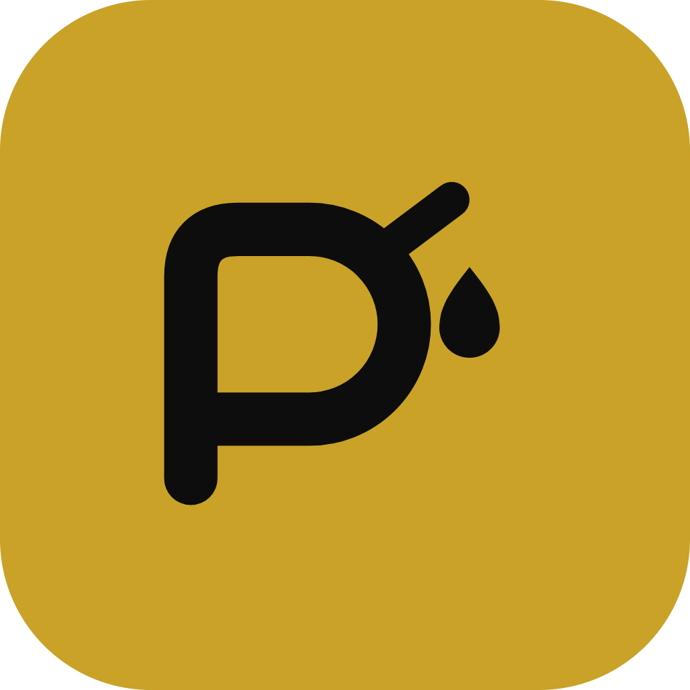
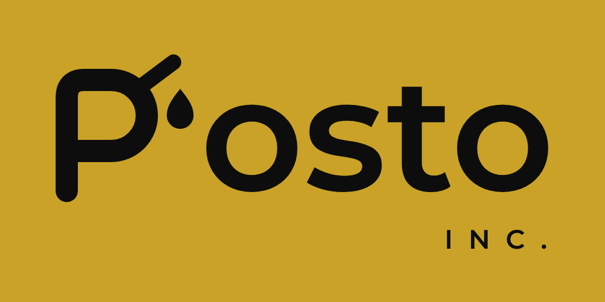

Falta de informação
O motorista não sabe o preço praticado pelos postos que estão à frente no caminho.
Mobilidade urbana: o aplicativo que encontra o posto mais barato e confiável no seu trajeto pela cidade

Encontre o melhor posto
no seu caminho
O preço dos combustíveis varia de um posto para outro, inclusive entre estabelecimentos de uma mesma cidade e de um mesmo trajeto. Na prática, porém, o motorista raramente tem essas informações à mão no momento em que precisa abastecer.
Na cidade, isso tem um custo coletivo: cada volta extra atrás de um posto mais barato coloca mais carros nas ruas, aumenta o congestionamento e as emissões de poluentes. Além disso, o combustível adulterado prejudica o consumidor e os veículos que circulam pela cidade.
Ao mesmo tempo, cresce o número de veículos elétricos e híbridos, cujos donos precisam saber onde existem pontos de recarga ao longo do caminho.
O Posto Inc. reúne essas informações em um só lugar: o aplicativo funciona como um GPS e, durante o trajeto, mostra quais postos estão mais baratos, quais são os mais bem avaliados pela comunidade de motoristas e quais têm carregador para carro elétrico.
Postos próximos podem praticar valores bem distintos.
A escolha do posto costuma ser feita durante a viagem.
Motoristas de veículos elétricos precisam localizar carregadores.
Menos voltas atrás de posto significam menos trânsito e menos poluição nas ruas.
Como ajudar o motorista a escolher, sem sair do seu trajeto pela cidade, o posto de combustível que oferece o melhor equilíbrio entre preço, qualidade e serviços?
O motorista não sabe o preço praticado pelos postos que estão à frente no caminho.
Procurar um posto mais barato fora da rota consome tempo e combustível e aumenta o trânsito e as emissões na cidade.
Avaliações genéricas não dizem se o preço anunciado confere ou se o carregador está funcionando.
Desenvolver um aplicativo de mobilidade urbana que trace a rota do motorista pela cidade, identifique os postos de combustível existentes no trajeto e compare seus preços, avaliações e serviços, informando a distância do usuário até cada posto.

O “P” de Posto ganha um bico de bomba de combustível e uma gota: a letra vira o próprio ato de abastecer. O dourado representa valor e economia; o preto transmite sobriedade e confiança, qualidades de um serviço que protege o motorista da cidade.
As combinações de texto e fundo seguem o contraste mínimo de 4,5:1 da WCAG 2.1 (nível AA).
Traça o caminho de carro e acompanha o motorista em tempo real.
Identifica os postos do trajeto, a distância até cada um e entre eles.
Gasolina comum, gasolina aditivada, etanol, diesel e recarga elétrica.
Notas e comentários feitos de usuário para usuário, dentro do próprio app.
Postos favoritos e rotas frequentes salvos para quem repete o trajeto.
Sinaliza postos com denúncias na ANP e no Procon e recebe reclamações dos motoristas.
Cadastro do veículo, do tanque e do consumo médio para estimar o custo da viagem.
Histórico de abastecimentos, consumo real em km/L e gasto mensal.
Dados do usuário, reputação como avaliador e histórico de avaliações.
Em vez de depender de avaliações de serviços externos, o Posto Inc. tem um sistema próprio, em que motoristas avaliam os postos para outros motoristas.
Cada avaliação traz uma nota de 1 a 5 estrelas, um comentário e marcadores objetivos, como “preço confere com o app” e “carregador funcionando”. Os demais usuários indicam se a avaliação foi útil, o que aumenta a reputação de quem avaliou.
Combustível adulterado prejudica o motor e o bolso do motorista. O Posto Inc. reúne, em um espaço de reclamações dentro do app, três fontes de informação sobre cada posto:
Para não acusar sem provas, o app sempre mostra a fonte, a data e a situação de cada ocorrência e usa os termos “suspeita” e “em apuração” até a conclusão da fiscalização.
Amostra coletada pela fiscalização com teor de etanol anidro acima do limite permitido.
Fonte: ANP · Autuado há 1 mêsConsumidores relatam volume abastecido menor que o cobrado.
Fonte: Procon-RJ · Em apuração há 9 dias · ainda sem conclusão da fiscalizaçãoPostos, órgãos consultados e ocorrências fictícios, apenas para demonstração.
Interaja com o celular. Os pontos (de A a F), os postos, os preços, os usuários e as avaliações são fictícios. Os dados que você cadastrar ficam salvos apenas neste navegador.
O protótipo roda diretamente no navegador. O mapa é um grafo fictício: os pontos e cruzamentos são vértices, e as ruas são arestas com peso igual ao comprimento. Perfil, carro, favoritos, abastecimentos e avaliações são gravados no armazenamento local do navegador.
Para encontrar o menor caminho entre a partida e o destino, foi utilizado o algoritmo de Dijkstra. Os postos localizados nas arestas desse caminho são selecionados, e a distância até cada um é medida ao longo do trajeto, e não em linha reta.